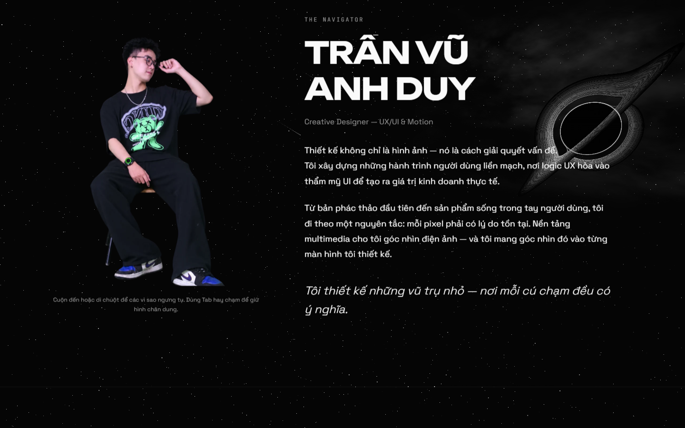
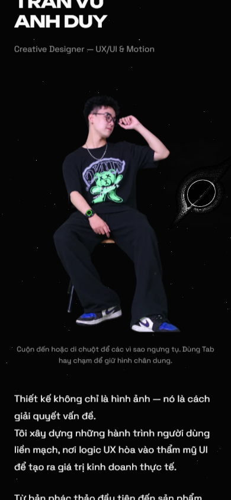
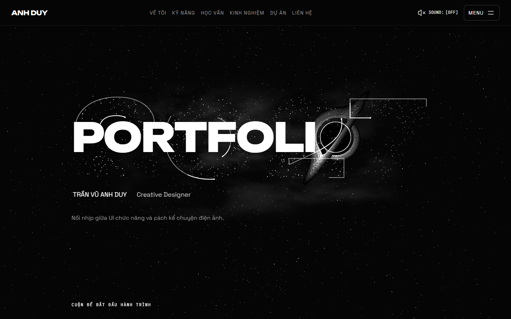
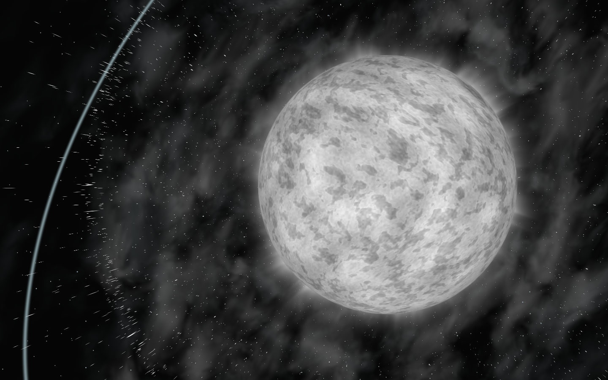

Stellar Odyssey · 14/10/2026 · Chờ duyệt G3
Chân dung hoàn chỉnh.
Plasma có chiều sâu.
Bản tinh chỉnh theo phản hồi: sao tụ thành ảnh màu thật, vệt số 7 rõ hơn, bề mặt sao và quầng khí được chỉnh lại. Giữ tiến độ cuộn, camera và nhịp chuyển cảnh; trường biến dạng mở rộng với sóng dư phía sau.
Sao ngưng tụ thành ảnh màu
Hover, focus hoặc cuộn đến About: sao tụ lại, ảnh gốc hiện dần; cuối quá trình là ảnh màu liền mạch, không còn bề mặt chấm. Cuộn ngược hoàn nguyên tiến độ. Reduced-motion giữ ảnh đọc được ngay.

Ảnh gốc, giữ khung và nội dung About.
390px — giữ kích thước ảnh và bố cục hiện có.2027 — vệt sáng rõ hơn

Tăng độ rõ của runner số 7 từ 8% lên 100%; giữ nhịp glitch, thời gian giữ 7 và tốc độ runner. Không bật lại viền nền liên tục.Preloader → Hero
Plasma → co sụp → hố đen

Màn hình dọc
G3 chờ bạn duyệt. Intel UHD 630, 1440px/DPR1: plasma 37,76 FPS; co sụp 17,57 FPS; Contact 16,77 FPS. Chưa đạt mục tiêu hiệu năng trên iGPU; cần xử lý ở V10. Viewport mobile trong Browser không thay thế điện thoại thật.